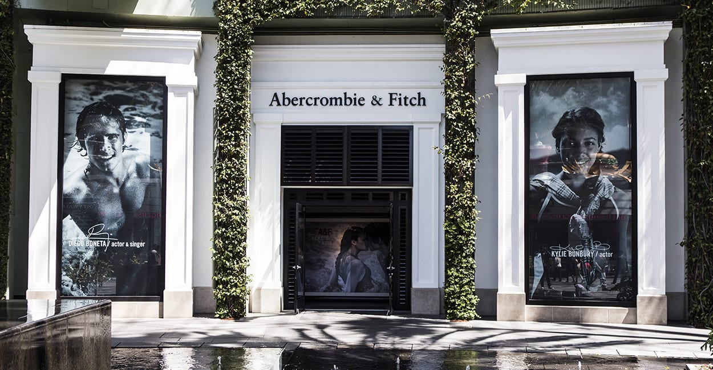
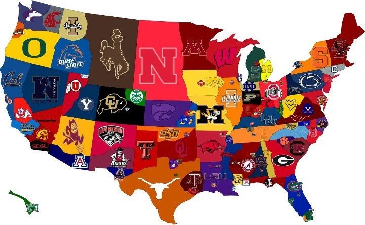

This photo was taken in October 2021 during my soroity bid day, the theme was candy land. It was really fun to welcome new members home into our chapter.
Below are a couple of projects from my sophomore and junior year classes at the University of Iowa. There a links leading to a Google Drive version of each presentation or document.

Business Communication and Protocol
My junior year I took a Business Communication and Protocol, which is a class to help students transition from communicating like a student to
communicating like a professional within a workplace environment.
My team and I did our project about making Abercrombie and Fitch's business practices more sustainable.

Introduction to Business Analytics
My sophomore year I took Intro to Business Analytics which taught me about; data preparation, data
visualization, as well as statistical tools such as chi-square testing, regression, and
forecasting. In addition, the course taught me Microsoft Excel as different ways to use the forementioned statistical tools.
Through this project, my group used multivariable regression and data visualization that we learned during the
semester to estimate the effect of certain factors on college football game attendance.

Introduction to Marketing Strategy
My junior year I took Intro to Marketing Strategy which taught me about marketing, a discipline that combines the art and
science of analyzing markets then creating customer value to facilitate exchange
Through this project, my group used makreting strategy's to rebrand a new product for Unilevers famous Klondike bars.